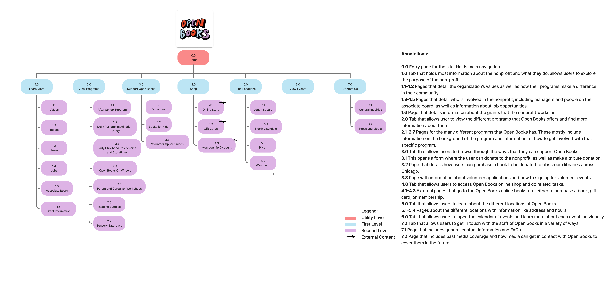

Open Books Project
Overview
This project was a semester-long project completed in a group of three for a Content Strategy and Information Architecture class during my master’s program. The aim of the project was to choose a website and restructure its navigation based on research conducted throughout the course of the class. The website that we restructured was Open Books, a Chicago based nonprofit that works to promote literacy through their programs. We chose this website because the information architecture left something to be desired and we thought we could improve upon it.
Methodologies
Our methodology for this project was to complete a content inventory to identify problems, then complete three rounds of both card sorting and tree testing to help us settle on the final design of our navigation and sitemap.
My Role
My role in this project was to do the content inventory, help set up our three rounds of card sorting, run tree testing, make the sitemap, and contribute to the writing of our final report.
Project Deliverables
In the course of completing this project, we found that the way the website was organized had a lot of redundancies and content in places that one wouldn’t expect it to be. We reorganized the content into a different organizational framework and ran that framework through several rounds of card sorting and tree testing, changing the framework and sitemap as the results indicated were necessary. In the end, we had a proposed sitemap for the new organization of the website which would make it much easier for users to achieve tasks like donating and volunteering when they used the site.
Final Sitemap

Final Presentation
For more insight into this project, you can take a look at the final presentation here.
Key Takeaways
In the course of this project, I learned how to conduct user experience specific methodology like card sorts and tree tests. I also learned how to iterate through different rounds of these methodologies and change them based on the previous results to end up with something that was truly more efficient than the original product. If I had more time on this project, I would test the entire sitemap with some first click testing or task based usability testing to make sure that the new site structure made sense and then contact the organization with the proposed sitemap.